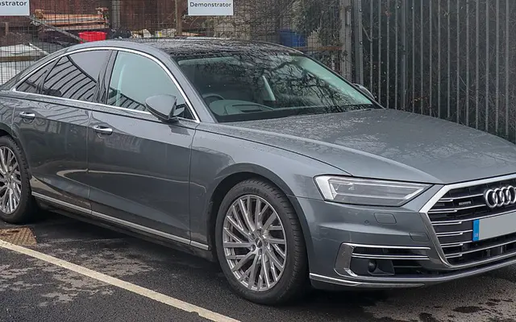

Par Motor › Precios por modelo › Audi A8
Precio de segunda mano · noviembre de 2026¿Cuánto vale un Audi A8 de segunda mano?

Precio justo estimado de un Audi A8 usado en España, año por año, con los kilómetros normales para su edad y en buen estado: de 6.700 € a 108.900 €. Para tasar el tuyo con sus kilómetros reales y su estado, usa el tasador gratis.
Precios del Audi A8 por año
A8 D3 (2002–2010)
Precio de nuevo: 3.0 TDI 233 CV, 70.000 € · 3.2 FSI 260 CV, 75.000 € · 4.2 V8 335 CV, 90.000 €
| Año | Km normales | 3.0 TDI 233 CV · Diésel | 3.2 FSI 260 CV · Gasolina | 4.2 V8 335 CV · Gasolina |
|---|---|---|---|---|
| 2010 | 100.000 km | 14.700 € | 16.200 € | 19.400 € |
| 2009 | 100.000 km | 13.300 € | 14.700 € | 17.600 € |
| 2008 | 100.000 km | 12.100 € | 13.300 € | 16.000 € |
| 2007 | 100.000 km | 10.900 € | 12.100 € | 14.500 € |
| 2006 | 100.000 km | 9.900 € | 11.000 € | 13.100 € |
| 2005 | 100.000 km | 9.000 € | 9.900 € | 11.900 € |
| 2004 | 100.000 km | 8.200 € | 9.000 € | 10.800 € |
| 2003 | 100.000 km | 7.400 € | 8.200 € | 9.800 € |
| 2002 | 100.000 km | 6.700 € | 7.400 € | 8.900 € |
A8 D4 (2010–2017)
Precio de nuevo: Hybrid 245 CV, 80.000 € · 3.0 TDI 262 CV, 85.000 € · 3.0 TFSI 290 CV, 90.000 €
| Año | Km normales | Hybrid 245 CV · Híbrido | 3.0 TDI 262 CV · Diésel | 3.0 TFSI 290 CV · Gasolina |
|---|---|---|---|---|
| 2017 | 100.000 km | 31.400 € | 35.100 € | 33.600 € |
| 2016 | 100.000 km | 29.700 € | 32.000 € | 31.800 € |
| 2015 | 100.000 km | 28.100 € | 29.100 € | 30.100 € |
| 2014 | 100.000 km | 26.500 € | 26.300 € | 28.400 € |
| 2013 | 100.000 km | 24.300 € | 23.900 € | 26.100 € |
| 2012 | 100.000 km | 22.100 € | 21.700 € | 23.600 € |
| 2011 | 100.000 km | 20.000 € | 19.600 € | 21.400 € |
| 2010 | 100.000 km | 18.100 € | 17.800 € | 19.400 € |
A8 D5 (2017–hoy)
Precio de nuevo: 50 TDI 286 CV, 100.000 € · 55 TFSI 340 CV, 105.000 € · 60 TFSIe (enchufable) 449 CV, 120.000 €
| Año | Km normales | 50 TDI 286 CV · Diésel | 55 TFSI 340 CV · Gasolina | 60 TFSIe (enchufable) 449 CV · Híbrido enchufable |
|---|---|---|---|---|
| 2026 | 10.000 km | 96.900 € | 105.900 € | 108.900 € |
| 2025 | 30.000 km | 78.500 € | 85.800 € | 88.300 € |
| 2024 | 50.000 km | 71.200 € | 77.800 € | 80.000 € |
| 2023 | 70.000 km | 64.600 € | 70.600 € | 72.600 € |
| 2022 | 90.000 km | 53.800 € | 64.000 € | 65.800 € |
| 2021 | 100.000 km | 48.300 € | 55.700 € | 57.300 € |
| 2020 | 100.000 km | 46.700 € | 47.300 € | 48.700 € |
| 2019 | 100.000 km | 45.000 € | 43.400 € | 44.600 € |
| 2018 | 100.000 km | 43.200 € | 41.300 € | 42.500 € |
| 2017 | 100.000 km | 41.300 € | 39.200 € | 40.300 € |
Kilómetros normales: 15.000 al año en gasolina, híbridos y eléctricos, y 20.000 en diésel, con un máximo de 100.000 km (por encima no tasamos: el precio depende demasiado del historial de cada coche). Cifras redondeadas a 100 €.
Preguntas frecuentes
¿Cuánto vale un Audi A8 de segunda mano?
Según el año, la versión y los kilómetros, un Audi A8 usado vale hoy de 6.700 € a 108.900 € en España. El más barato de nuestra tabla es un 3.0 TDI de 2002 (6.700 €) y el más caro un 60 TFSIe (enchufable) de 2026 (108.900 €). Son precios justos estimados entre particulares y profesionales, con los kilómetros normales para su edad y en buen estado.
¿Cuánto valor pierde un Audi A8 al año?
Con unos años encima, un Audi A8 pierde alrededor de un 12 % de su valor cada año (calculado sobre el 50 TDI de la generación A8 D5). Los primeros años la caída es mayor y a partir de los 70.000 km se acelera.
¿Qué motorizaciones tiene el Audi A8?
En nuestra base de datos hay versiones diésel, gasolina, híbrido y híbrido enchufable, en 3 generaciones: A8 D3, A8 D4 y A8 D5.
¿Cómo sé si me piden demasiado por un Audi A8?
Abre el tasador de Par Motor, elige el Audi A8, el año y los kilómetros reales, y escribe lo que te piden. Te diremos si está por debajo del precio justo (chollo) o por encima (caro). Es gratis y no pide registro ni matrícula.
Otros Audi
Compara su coste real
El precio de compra es solo una parte. Mira cuánto te costaría al mes con combustible, seguro, neumáticos, mantenimiento y lo que pierde de valor.
Abrir el comparador →